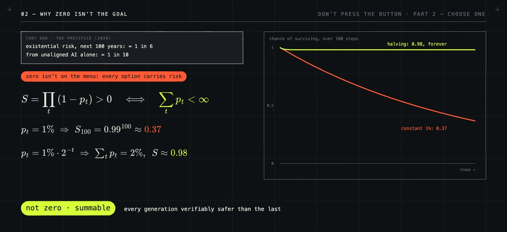

/ 12:45 VIDEO · DON’T PRESS THE BUTTON, PART 2 · 4 MIN READ
Autonomy or superintelligence:
choose one.
Human societies have spent centuries trying to get the benefits of power without trusting one actor to exercise all of it. Montesquieu's answer in 1748 was to divide authority between separate bodies. AI brings back the design problem in a more extreme form: how do we use a system more capable than its overseers without giving it the freedom and access to act against them?
Several proposals separate capability from agency. Armstrong, Sandberg and Bostrom studied question-answering oracles in 2012 and concluded that they could be safer without being harmless. Gwern (2016) argued that economic pressure tends to turn tools into agents. Drexler (2019) proposed an ecosystem of narrow services rather than one general agent; Yoshua Bengio's Scientist AI (2025) proposes a capable system without goals of its own. The commercial incentive to connect these capabilities back into an autonomous loop is precisely what a separation would have to withstand.
This second part of The Red Button Test is my synthesis of those ideas. It takes the worst case seriously: a system far smarter than every defender, with goals of its own. The architecture below is a proposal for managing that case, not an established safety result.
The problem is whether risk keeps accumulating
Zero risk is unlikely to be available. Pausing development has risks too. But a small risk at each generation and a shrinking risk at each generation lead to very different long-run outcomes. If \(p_t\) is the probability of failure at step \(t\), conditional on surviving the earlier steps, survival is
\[S = \prod_t (1 - p_t).\]
Provided no individual \(p_t\) equals one, the infinite product is positive exactly when \(\sum_t p_t\) is finite. A constant 1% leaves \(0.99^{100} \approx 37\%\) survival after a hundred steps and tends to zero eventually. A risk that halves each generation, \(p_t = 1\% \cdot 2^{-t}\) for \(t = 0,1,\dots\), sums to 2% and leaves about 98% survival in the limit. The ambition is therefore to make each generation reduce the risk of the next, rather than merely remain below a fixed threshold.

For the harms considered here, capability, autonomy, and access work together. A chess engine is superhuman within its task but cannot act on the world. A thermostat acts alone but has little capability. The proposed rule is to avoid combining superintelligence with autonomous action and consequential access, including through connections between systems.
Four roles, with different kinds of permission
Scientist AIs would supply high-quality answers and probability estimates without taking actions. Designer AIs would improve AI systems, with no other remit. Restricting their training to mathematics and programs is intended to reduce their knowledge of people and institutions; it would not prove that they cannot infer such knowledge or learn it through tools. That boundary needs enforcement as well as a training choice.
Counter-intelligence AIs would be more capable than the agents they monitor, but permitted only to observe, flag, and pause. Entrepreneur AIs would act in the world, while remaining deliberately below the superintelligent capability level and unable to modify themselves. Humans would hold the permissions connecting these roles.
The unit of regulation would have to be the system, not just the model. An oracle repeatedly called by an automated controller can become part of an agent. A swarm may have capabilities that no individual member possesses. Successors can inherit access that their creators were never meant to grant. Without limits on composition, the separation exists on paper and disappears in deployment.
Who watches the watchers?
The shared backbone may be the weakest link. Agents, monitors, and judges are often derived from a small number of base models trained on overlapping data. That gives us reason to investigate correlated failures rather than count each layer as independent protection. Even deliberately separate implementations can fail together: Knight and Leveson tested 27 independently written versions of a program in 1986 and found common failures far more frequently than independence predicted.
The proposal also requires cooperation from major developers and accepts slower action as a cost of separation. It does not settle how to measure the capability ceiling or guarantee that a highly capable advisor cannot manipulate its operators. Those are central design problems. The point of splitting authority is to make dangerous combinations harder to assemble, and to make improvements in oversight reduce future risk instead of merely permitting more exposure to it.